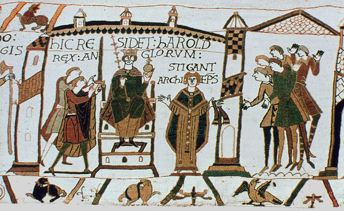

<!DOCTYPE html>
<html>
<head>
  <link rel="icon" type="image/x-icon" href="faviconnn.ico">
</head>
</html>
<html lang="id">
<head>
  <meta charset="UTF-8">
  <title>Timeline Peristiwa</title>
  <link rel="stylesheet" href="style.css">
</head>
<body>
  <header>
     <h1>Timeline Peristiwa</h1>
    <nav>
      <a href="index.html">Beranda</a>
      <a href="tentang.html">Tentang</a>
      <a href="kronologi.html">Timeline</a>
      <a href="dampak.html">Dampak</a>
      <a href="quiz.html">Quiz</a>
    </nav>
  </header>
  <main>
    <p>Berikut adalah rangkaian peristiwa penting yang terjadi selama proses penaklukan Inggris oleh bangsa Norman:</p>

    <style>
      img{ 
        width: 200px ;
      }
    </style>

    <h3>1064 – William Mengklaim Janji Takhta</h3>
    <main>
    
    <p class=imgSub><em>© THE BAYEUX TAPESTR</em></p>
    <p>
      Menurut versi William, Harold Godwinson pernah bersumpah akan mendukung William untuk menjadi Raja Inggris setelah Edward wafat. Sumpah ini menjadi dasar utama William untuk menuntut takhta Inggris. Namun, kebenaran peristiwa ini masih diperdebatkan oleh sejarawan.
    </p>

    <h3>5 Januari 1066 – Kematian Edward the Confessor</h3>
    <main>
    
    <p class=imgSub><em>© THE BAYEUX TAPESTR</em></p>
    <p>
      Raja Edward meninggal dunia tanpa meninggalkan ahli waris langsung. Kepergiannya menciptakan kekosongan kekuasaan yang memicu krisis suksesi. Dalam waktu singkat, Witan (dewan bangsawan) memilih Harold Godwinson sebagai Raja Inggris.
    </p>

    <h3>6 Januari 1066 – Harold Godwinson Dinobatkan</h3>
    <main>
    
    <p class=imgSub><em>© Cambridge University Library via Wikimedia Commons / Public Domain</em></p>
    <p>
      Sehari setelah kematian Edward, Harold dimahkotai sebagai Raja Inggris. Namun, klaimnya atas takhta diperdebatkan dan dianggap tidak sah oleh William dari Normandy serta Harald Hardrada dari Norwegia.
    </p>

    <h3>September 1066 – Invasi Harald Hardrada</h3>
    <main>
    
    <p class=imgSub><em>© Photograph by Peter Nicolai Arbo</em></p>
    <p>
      Harald Hardrada, Raja Norwegia, mendarat di Inggris utara bersama pasukannya. Ia bersekutu dengan Tostig, saudara Harold yang memberontak. Mereka berhasil menang dalam beberapa pertempuran kecil sebelum menghadapi pasukan utama Harold.
    </p>

    <h3>25 September 1066 – Pertempuran Stamford Bridge</h3>
    <main>
    
    <p class=imgSub><em>© Illustration on 'Hutchinson Story of the British Nation'</em></p>
    <p>
      Harold Godwinson memimpin pasukan Inggris untuk menghadang invasi Norwegia. Dalam pertempuran ini, pasukan Harold menang telak dan Harald Hardrada tewas. Namun, kemenangan ini melelahkan pasukan Inggris yang kemudian harus segera menghadapi invasi Norman di selatan.
    </p>

    <h3>28 September 1066 – William Mendarat di Inggris</h3>
    <main>
    
    <p class=imgSub><em>© unknown</em></p>
    <p>
      William dan pasukan Normannya mendarat di Pantai Selatan Inggris (Pevensey) dan mulai membangun kekuatan militer serta logistik. Harold segera bergerak ke selatan dengan pasukannya yang baru saja bertempur di utara.
    </p>

    <h3>14 Oktober 1066 – Pertempuran Hastings</h3>
    <main>
    
    <p class=imgSub><em>© Photo / www.angelfire.com/mb2/battle_hastings_1066/clovellhastingsstitched.jpg</em></p>
    <p>
      Pertempuran penentu terjadi di Hastings. Dalam pertempuran yang berlangsung seharian penuh, Harold Godwinson terbunuh—menurut legenda terkena panah di mata—dan pasukan Inggris dikalahkan. Ini menandai berakhirnya kekuasaan Anglo-Saxon.
    </p>

    <h3>25 Desember 1066 – Penobatan William sebagai Raja Inggris</h3>
    <main>
    
    <p class=imgSub><em>© Artist / Francis Drake</em></p>
    <p>
      William resmi dinobatkan sebagai <strong>William I, Raja Inggris</strong>, di Westminster Abbey pada hari Natal. Ini menandai dimulainya era baru dalam sejarah Inggris di bawah kekuasaan Norman.
    </p>
  </main>
</body>
</html>
 <footer>
    <p>&copy; 2025 | Proyek Kelompok SPBI - Daniel, Figo & Haura ©️</p>
  </footer>
</body>
</html>

